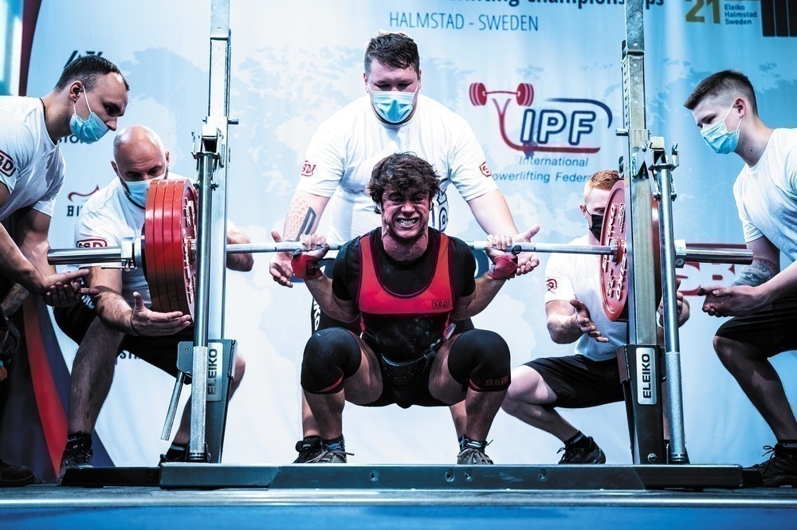
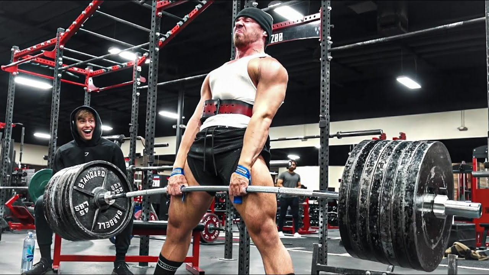

SQUAT
Alberto Herrais
La sentadilla es un ejercicio básico en el powerlifting que involucra el movimiento de flexión
y extensión de las piernas mientras se sostiene una barra en la parte superior de la espalda.
A pesar de que puede parecer un ejercicio simple, la sentadilla es en realidad bastante compleja y requiere de una técnica adecuada para realizarla de manera segura y efectiva.
La sentadilla involucra una gran cantidad de músculos en el cuerpo, incluyendo los cuádriceps, glúteos, isquiotibiales y la musculatura de la espalda. La técnica adecuada para realizar una sentadilla implica una serie de pasos cuidadosamente coordinados que incluyen la posición de los pies, la colocación de la barra en la espalda, la flexión de las caderas y las rodillas, y la extensión de las piernas para volver a la posición inicial.
BENCH PRESS
.jpg)
David Laid
El press de banca es uno de los tres ejercicios básicos en el deporte del powerlifting. En este ejercicio, los atletas acostados en un banco horizontal deben levantar una barra cargada desde el pecho hasta la extensión completa de los brazos. La técnica adecuada para realizar el press de banca es esencial para levantar el máximo peso de manera segura y efectiva.
La técnica adecuada para el press de banca involucra una serie de pasos cuidadosamente coordinados que incluyen la posición de los pies, la colocación de las manos en la barra, la reducción de la barra hasta el pecho y la extensión completa de los brazos para levantar la barra. La fuerza y la estabilidad del núcleo son fundamentales en este ejercicio.
DEADLIFT
Lex Litle
El peso muerto o deadlift es uno de los tres ejercicios básicos en el deporte del powerlifting. En este ejercicio, el atleta levanta una barra cargada desde el suelo hasta la posición vertical, manteniendo la postura adecuada durante todo el levantamiento.
El peso muerto es un ejercicio muy complejo que involucra varios grupos musculares, incluyendo la espalda baja, los glúteos, los músculos isquiotibiales y los músculos de la cadena posterior. Para realizar correctamente este ejercicio, el atleta debe estar en una postura adecuada, con la barra cerca de las piernas y las manos colocadas en la barra de manera correcta. El atleta entonces levanta la barra utilizando la fuerza de las piernas y la espalda, y se asegura de mantener una postura correcta durante todo el levantamiento.